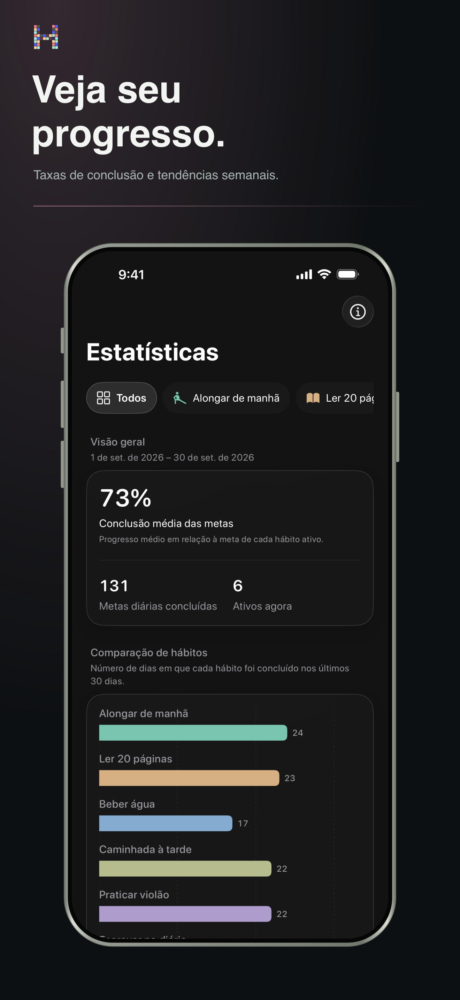

Padrões, não pressão
Entenda o que ajuda você a voltar.
Veja sequências, taxas de conclusão e padrões de longo prazo sem transformar sua rotina em uma planilha.
- Sequência atual e recorde
- Tendências e distribuição das conclusões
- Contexto semanal, mensal e anual